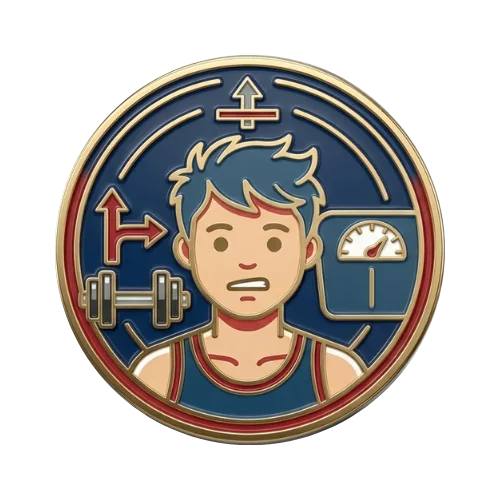
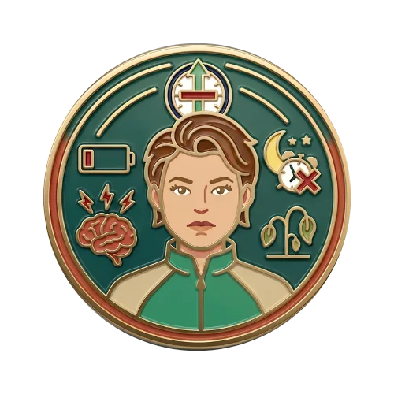
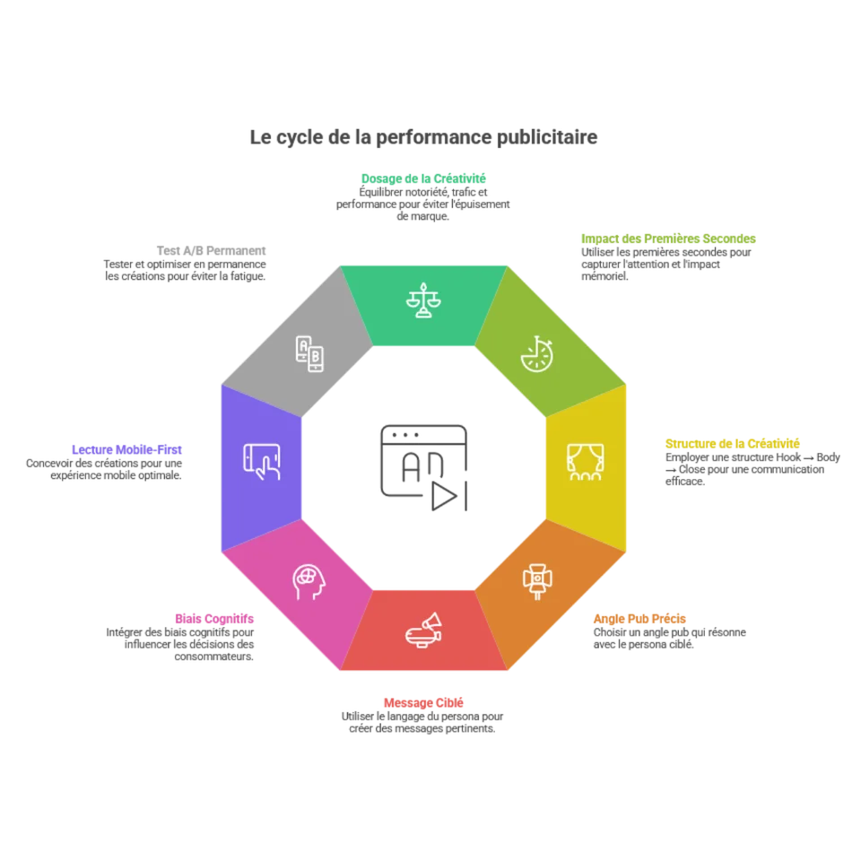
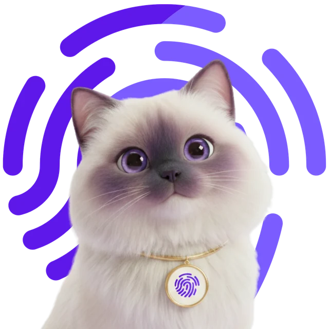
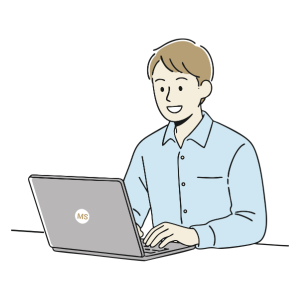
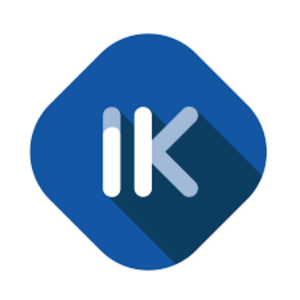
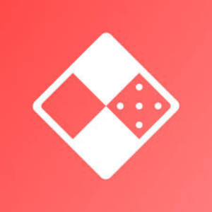

Consultant à Lyon. Je pilote vos budgets sur
Meta AdsTikTok AdsSnapchat AdsLinkedIn AdsPinterest AdsX AdsMeta Ads, TikTok Ads, Snapchat Ads, LinkedIn Ads, Pinterest Ads et X Ads,
avec une règle : chaque euro investi doit travailler.
Meta AdsTikTok AdsSnapchat AdsLinkedIn AdsPinterest AdsX AdsStratégie créativeSEO et GEOProgrammatiqueAffiliationDOOHReporting
Meta AdsTikTok AdsSnapchat AdsLinkedIn AdsPinterest AdsX AdsStratégie créativeSEO et GEOProgrammatiqueAffiliationDOOHReporting
Trois métiers, une seule méthode.
Le marketing donne le cap, les ads le portent, la créa fait cliquer. Je travaille les trois ensemble, pour que chaque euro investi aille au même endroit.
Marketing
La vision cross-canal, au-delà du social. Un plan d'action priorisé, aligné sur vos objectifs business.
Stratégie marketing globale et plans de communication
SEO et GEO, newsletters, benchmarks concurrentiels
Programmatique, affiliation, DOOH
Recommandation d'investissement par canal
Vécu chez : Agence 79 (Havas), Le Vinatier, Ludum.fr et en freelance.
Ads
La mise en place et le pilotage de vos campagnes, de l'audit à l'optimisation continue, pilotés sur le ROAS, le CPA et le CTR.
Meta, TikTok, Snapchat, LinkedIn, Pinterest et X
Audiences, segmentation et ciblage par persona
Reporting hebdomadaire, Looker Studio et Catchr
Appels d'offres et pilotage de budgets
Vécu chez : IKOM (Labelium / Cosmo5), Agence 79 (Havas) et en freelance, plus de 3 M€ de budgets gérés.
Créa
Des créas qui parlent au bon problème, à la bonne personne, avec le bon angle. Pas une pub générique pour tout le monde.
Un visuel qui performe parle du bon problème, à la bonne personne, avec le bon angle. Un même produit ne se vend pas de la même façon à un jeune de 18 ans et à une mère de 50 ans.
Explicitation des personas
Motivations via la méthode SONCASE
Identification des points de douleur réels
Analyse des freins concrets (stéréotypes, contraintes)
Même produit, angles différents
Exemple : des compléments alimentaires pour le sport.

Hugo 18 ans, sportif
Douleur :
« Je stagne en salle »
Angle :
performance et dépassement
Hook :
« Tu stagnes depuis 3 mois ? »

Catherine 50 ans, mère active
Douleur :
« Je suis épuisée »
Angle :
énergie et bien-être
Hook :
« Et si la fatigue n'était pas normale ? »
Persona + SONCASE + hooks adaptés des créas qui convertissent

La règle d'or d'une créa qui marche
Des créas qui s'adressent à des groupes de personnes selon leur intérêt
Des hooks qui travaillent la curiosité, l'intérêt ou la problématique en 3 secondes
Mettre en lumière un problème qu'ils rencontrent et la manière dont on le résout
Exprimer une action concrète à réaliser (commenter, acheter…)
Des visuels simples avec les informations produit et le prix
Des visuels de réassurance
Voilà la recette pour des campagnes qui performent.
J'ai passé plus de 3 ans en agences média (Havas, puis IKOM jusqu'en août 2026), avec une activité de freelance en parallèle. Depuis mars 2026, je suis à mon compte et co-fondateur de Roomca. Originaire du Jura, diplômé de l'ICN Business School et de l'École Supérieure du Digital à Lyon.
Les étiquettes indiquent les piliers nourris par chaque expérience.
Marketing
Ads
Créa

Mars 2026 à aujourd'hui
Co-fondateur
Roomca
À mon compte, co-fondateur de Roomca, un site de cybersécurité.

2024 à aujourd'hui
Freelance
Gestion de social ads, recommandations créatives, stratégie marketing globale, recommandations SEO, gestion de projet, création de visuels.
Marketing
Ads
Créa

2024 à août 2026
Consultant Social Ads
IKOM, Groupe Labelium / Cosmo5
Gestion de nombreux comptes en social ads, appels d'offres, développement de l'utilisation de l'IA, creative strategist orienté performance et CA.
Ads
Créa
2023 à 2024
Consultant Programmatic & Paid Media
Agence 79, Groupe Havas
Consultant social media et programmatique junior. Comptes : Dr Pierre Ricaud, PMU.
Marketing
Ads
2023
Chargé de communication digital
Centre Hospitalier Le Vinatier
Élaboration des plans de communication de l'hôpital et des structures de recherche. Création de vidéos, photos et contenus visuels. Refonte du site web.
Marketing
Créa

2022
Chargé de développement commercial
Ludum.fr
Développement commercial, newsletters, SEO, benchmarks concurrentiels.
Marketing
Ce que je peux faire pour vous.
Une offre principale pour tout piloter, trois missions ciblées si vous avez besoin d'un seul des piliers.
Paid Social Ads Full Funnel
Gestion complète de vos campagnes Meta, TikTok, Snapchat, LinkedIn ou Pinterest. De l'audit à l'optimisation continue, avec une stratégie créative intégrée, orientée performance et CA.
Audit de compte et recommandations stratégiques
Stratégie d'audiences, segmentation et ciblage par persona
Création et gestion des campagnes (trafic, conversion, lead, notoriété)
« Matis a transformé nos campagnes Meta. En trois mois, notre coût par acquisition a chuté de moitié et nos créas génèrent enfin du clic. Son approche data + créa fait une vraie différence. »
Sophie LaurentDirectrice Marketing, E-commerce Nutrition
« Ce qui m'a impressionné, c'est la méthode. Il construit chaque angle autour d'un point de douleur précis. Les résultats ont suivi immédiatement. »
Thomas DurandCEO, Marque DTC Cosmétique
« Une très grande compréhension des enjeux et des besoins pour mon développement, des recommandations qui ont eu un réel impact sur la suite de mon activité. Je suis vraiment content de travailler avec Matis. »
LucasTNL Photographe
Parlons de votre budget pub.
Freelance basé à Lyon, disponible pour du consulting paid social, de l'audit créatif et de la stratégie marketing globale. Dites-moi ce qu'il vous faut, je prépare le mail.